Из Алтона в Петерсфилд
Сходили мы размять ноги в очередной однодневный поход, на этот раз поближе к дому. Путь наш представлял собой 25-километровый переход между двумя линиями поездов: одна заканчивается в Алтоне, а вторая идёт дальше в Портсмут, к морю. На карте видно, сколько наш путь занимает в масшатабах страны и внешнего Лондонского кольца.
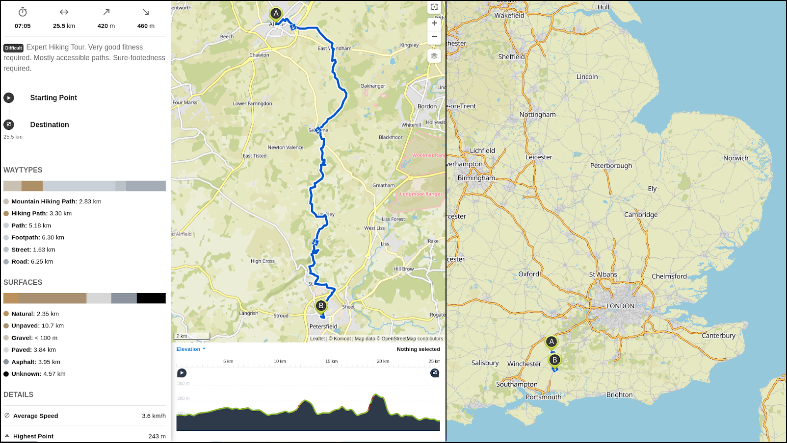
На поезде до Алтона ехать часа два с парой пересадок, поэтому на этот раз не надо было вставать в три часа ночи. Да и билеты на поезд были не привязаны ко времени, то есть не было риска не успеть на рейс. Встали мы в ленивом режиме часов в семь, а вышли около девяти (даже успели поесть до выхода). Погода была хорошая, около +20, мы вышли сразу в майках. Всю дорогу мобила вела себя как-то странно, и многие фотки таинственно исчезли. Надо думать, я их всё же не сделала, потому что другая версия — что мобила их съела — не объясняет почему она съела именно их.
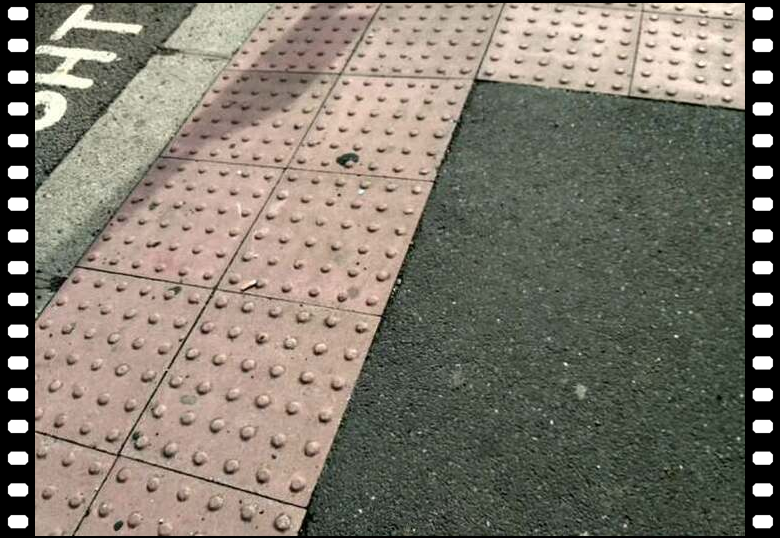
Так или иначе, сфоткался тротуар перед пешеходным переходом, хотя я хотела сфоткать вид города.
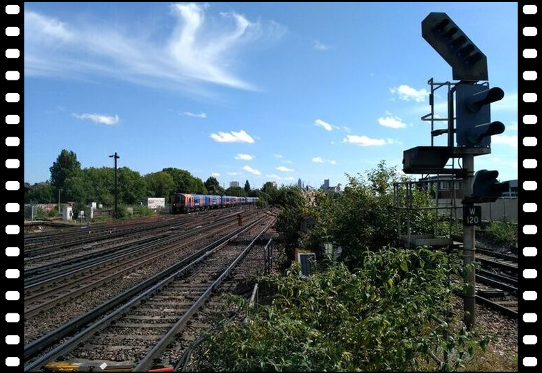
Первая пересадочная станция — Clapham Junction. На этой станции я ждала по полчаса каждый день, когда работала на прошлой работе (в PRQA). Сейчас из-за вируса закрыты все ларьки и забегаловки, а народу хоть и мало, но всё же довольно много. С северного конца платформы можно наблюдать на горизонте небоскрёбы Лондон-Сити.
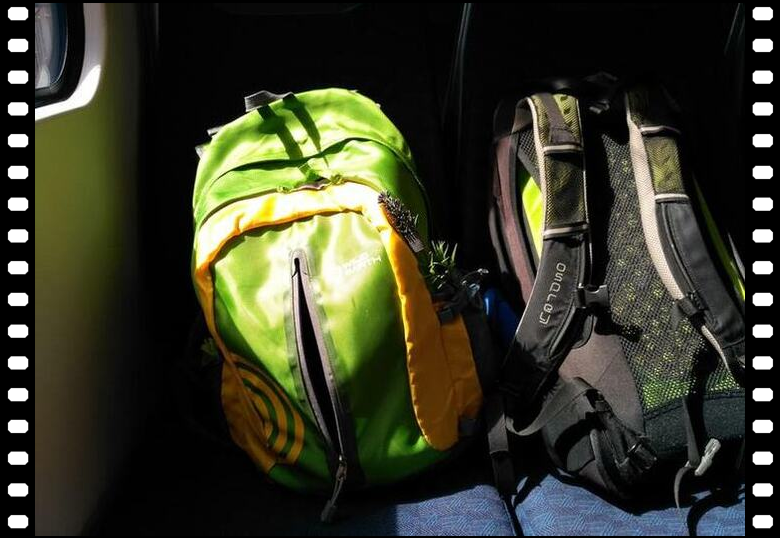
Вот мы уже на следующей пересадочной станции, сидим ждём отправления поезда. Кроме нас в вагоне никого нет, а на платформе ещё пара человек. C нами едут рюкзаки. Левый сам по себе весит граммов сто, почти невесомый, его мне мама подарила. А правый — велосипедный, с жёсткой спиной. Его подарили на работе.
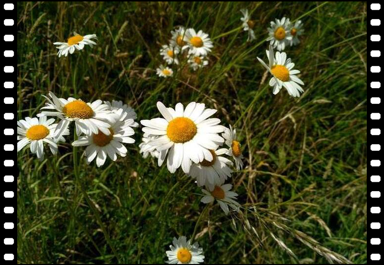
Наконец мы приехали на конечную станцию, в Алтон, и вытряхнулсь из поезда. Теперь осталось уехать, а не застрять где-нибудь в поле, вдалеке от железных дорог. Пока ехали в поезде, природа за окном менялась: стало больше сосен и папоротников. На выходе из Алтона у дороги нам встретилсь какие-то дикие красно-рыжие цветы, но телефон их не пожелал заснять (или заснял и стёр, но вряд ли). А потом пошли ромашки, вроде и самые обычные, но в Лондоне их как-то не видно. Особенно если всё время смотреть в монитор на восьмом этаже. :D
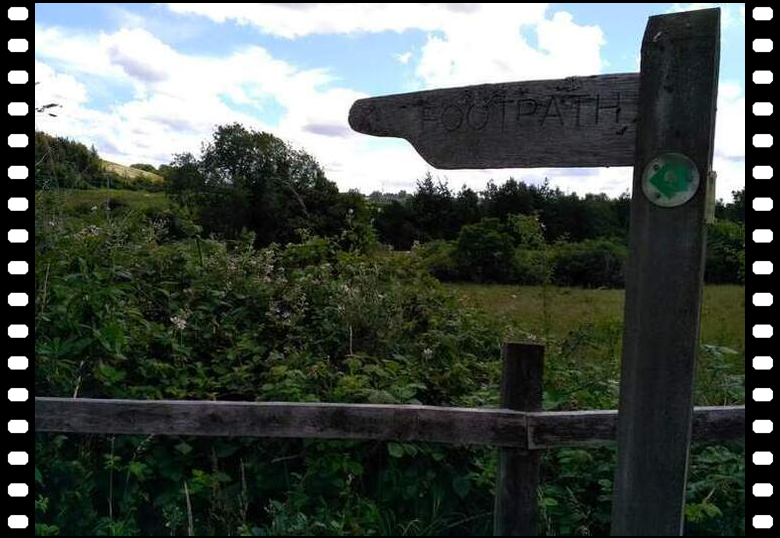
А вот и указатель Footpath, то есть Тропа. Что хорошо у британцев, очень они любят всякие тропинки и везде тщательно расставляют столбы с подписями и значками. Это очень помогает, особенно если у радара на телефоне голову снесёт, или не ловит, или вообще заряд закончится. На этом столбе — зелёная стрелка в белом кружке, она обозначает наш путь (который кстати назвается Hangers Way).
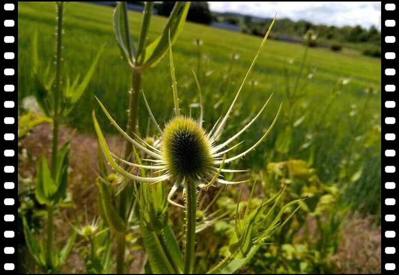
В самом начале пути был непонятный момент, когда тропа упёрлась в трассу под прямым углом, и не было никакого продолжения на противоположной стороне. Пришлось малость потоптаться туда-назад, но в конце концов Сергей Анатольич обнаружил чуть более широкую дыру между соседними кустами, и тропа возобновилась. А если бы он не нашёл, пришлось бы сходить с маршрута и долгое время плестить вдоль трассы в попытках набрести на продолжение тропы. Выйдя из придорожных кустов на поле, мы увидели этот пушистик (я их до этого видела только в засохшем виде). Оказывется, у него листья образуют карманы около стебля, в которых скапливется вода.
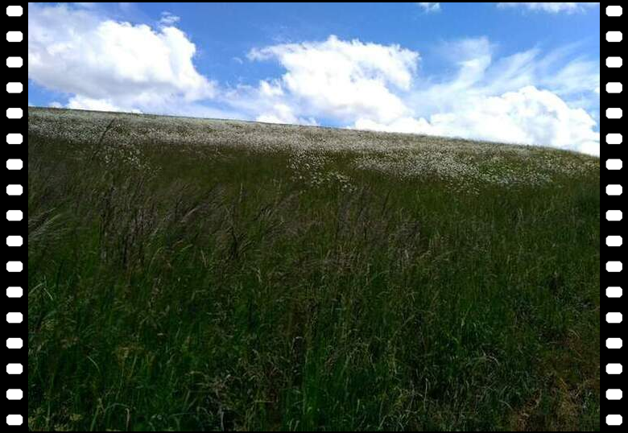
Слева по борту травяное поле, уходящее вверх и закрывающее горизонт. Куча каких-то мошек и клопов. Начало припекать солнце. Я точно помню, как делала множество фоток клопов, но коварный телефон их зажилил.
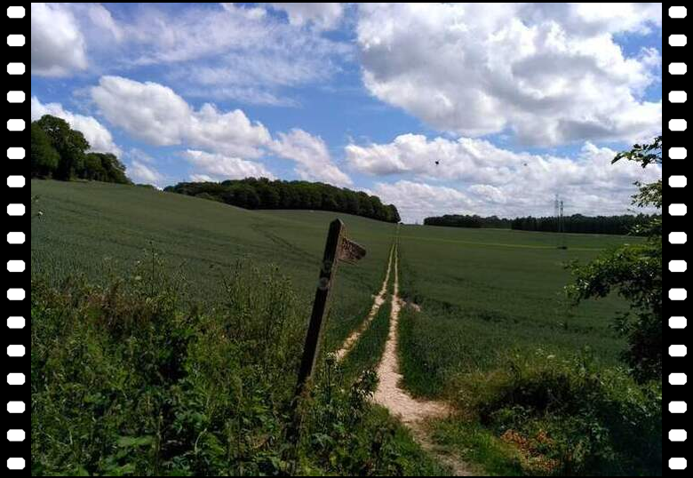
Дальше начинается совсем другое поле, с культурными растениями и линиями электропередач.
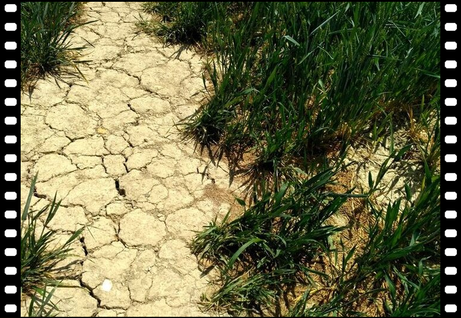
Правда земля у них тут такая, что вообще непонятно как тут можно расти. На протяжении всего поля — сухая, твёрдая корка с глубокими трещинами.
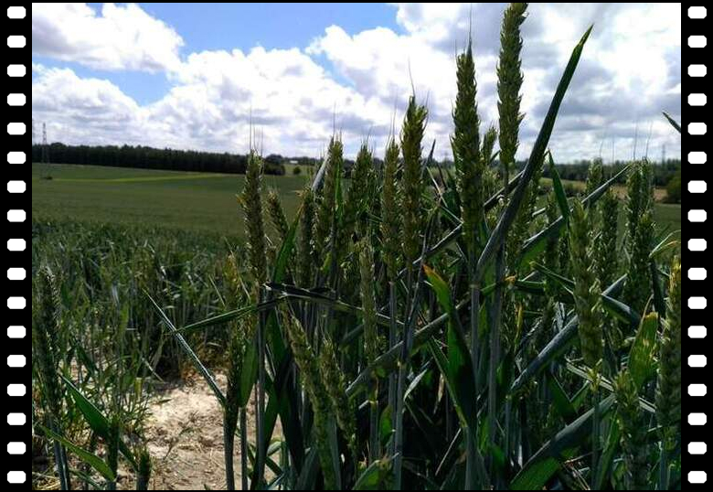
Но этим неопознанным травяным культурам видимо такое нравится, потому что хилыми их никак не назовёшь. Скорее возникает ощущение, что это они так переделали землю по своему вкусу. Непонятно, что это за колоски: у них почти нет усов (по сравнению с какой-нибудь пшеницей и рожью), но зёрна очень толстые.
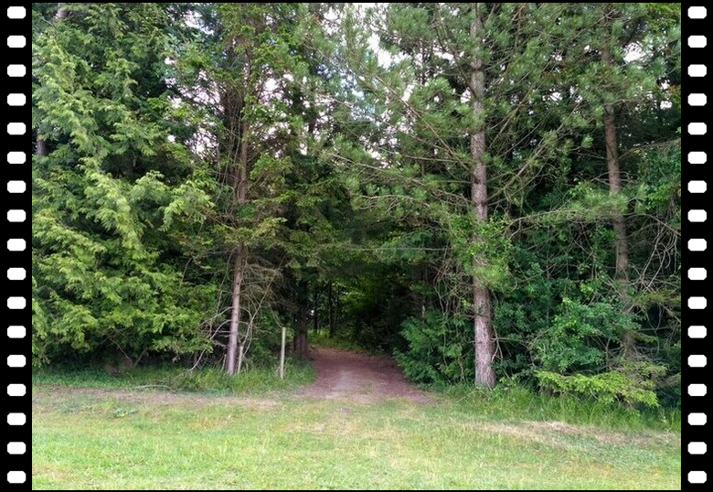
Вскоре мы дошли до лесополосы, отделяющей одно поле от другого.
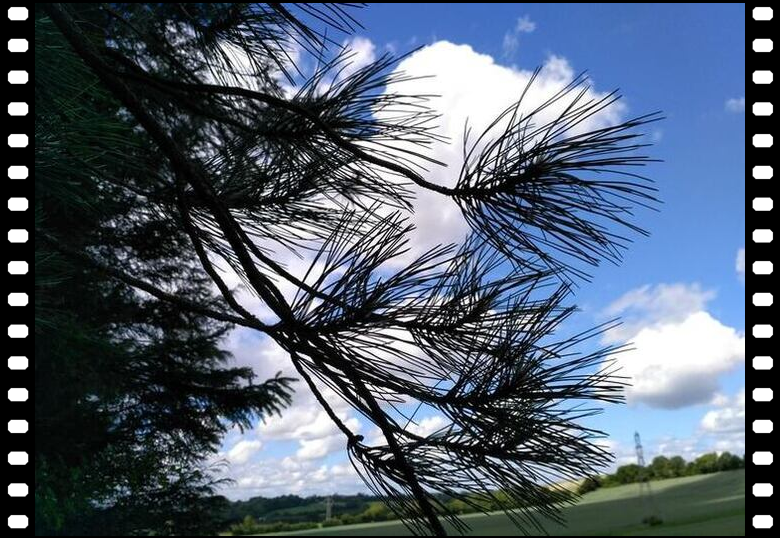
У граничных сосен большие красивые иголки.
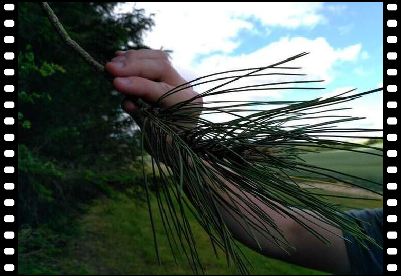
Действительно большие, вот они по сравнению с рукой Сергей Анатольича.
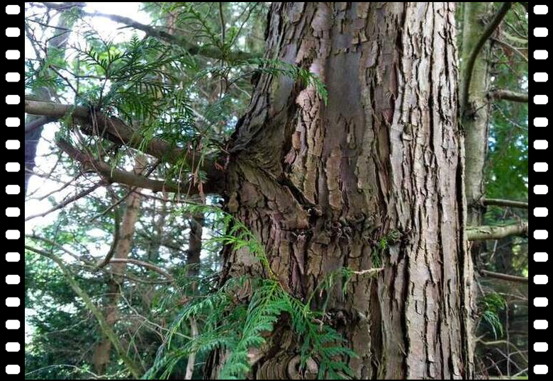
Кора дерева. Очень я люблю подобную кору, сухую и кусками.
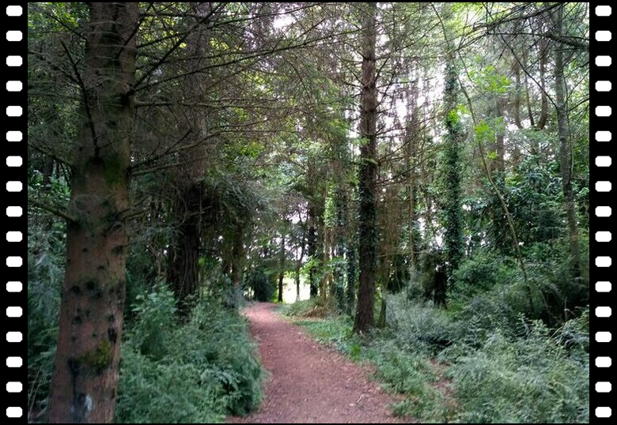
Вот они, эти классные суховато-прозрачные деревья. Из-за них лес совсем не тёмный и влажный, а лёгкий и дышащий.
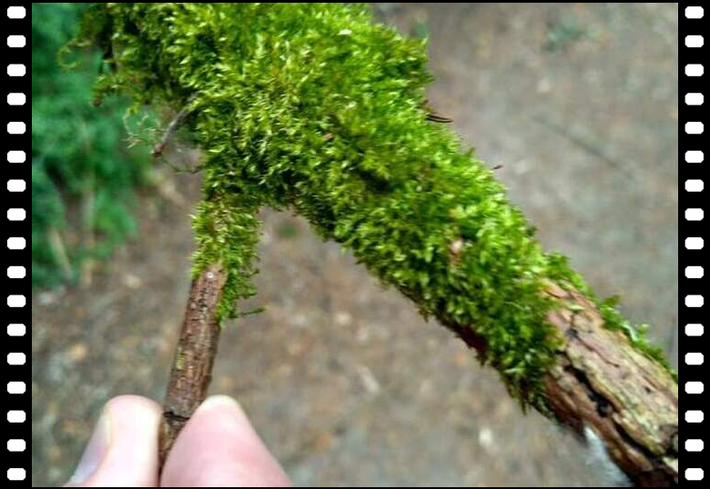
И мох тут тоже под стать, лёгкий и длинношёрстый, как в солнечных черничных лесах под Вилейкой.
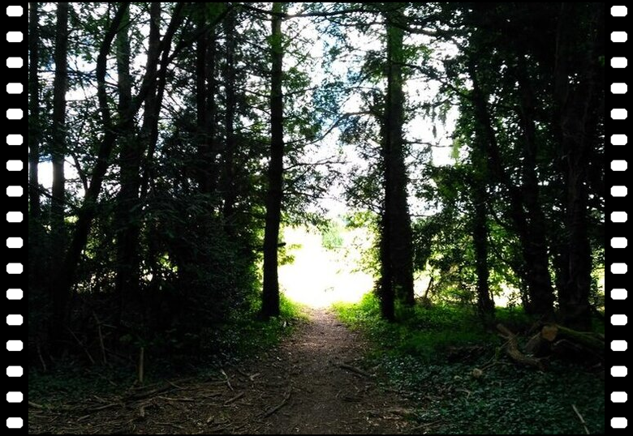
Лесополоса быстро заканчивается, и вот уже виднеется выход на следующее поле.
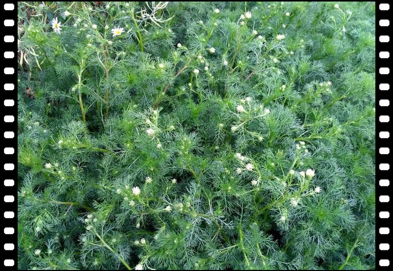
Это придорожные кусты какой-то низкорослой ромашки. На некоторых кустах были сросшиеся цветы по десять в ряд — как говорили в детстве дворовые знатоки, цветы-мутанты. В начале пути я особенно разрываюсь между желанием сфоткать каждый лист и каждый камень, и необходимостью экономить заряд на мобиле и следить за курсом. Тропы тут идут под разными углами во всех направлениях, и если не следить, сбиться легко.
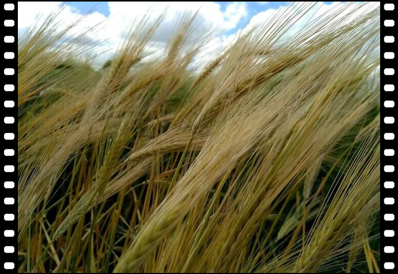
Началось пушистое ярко-светло-зелёное поле. Возле самой тропы колосья выгорели и стали ярко-жёлтые. Это поле хочется погладить рукой.
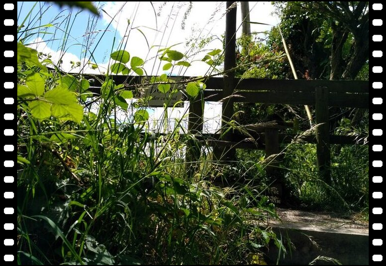
Дорогу нам преградила лежащая посреди тропы собака. Судя по виду, ей не плохо, просто она отдыхает. Вид у неё очень мирный, и хозяин стоит рядом — он приветствовал нас и извинился за поведение собаки (а мы сказали, что в таком месте и отдохнуть не грех). Между полями изгороди и поперечные деревянные скамейки, чтобы перелазить.
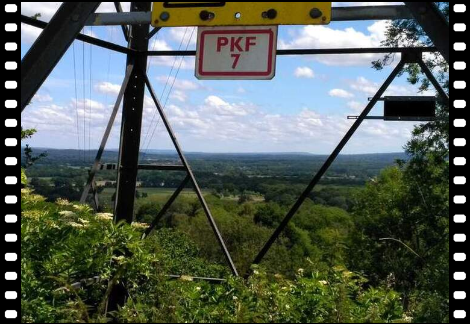
Дальше мы немного сбились с пути у какой-то лесопилки, но довольно быстро поняли ошибку и вернулись на курс. Тропа пересекла машинную дорогу и какое-то время продолжалась прямо по чьим-то загонам с лошадьми и овцами. Лошади тут разноцветные, рыжие, гнедые, чёрно-белые, светлые, серовато-коричнеые. Есть некоторые с очень мохнытыми ногами. Они наблюдали нас издалека, а вот овцы очень даже заинтересовались и хотели было полезть через забор вслед за Сергей Анатольичем.
Тропа снова вышла на поля, и тянется по гребню довольно высокого холма. Через просвет в деревьях видна даль.
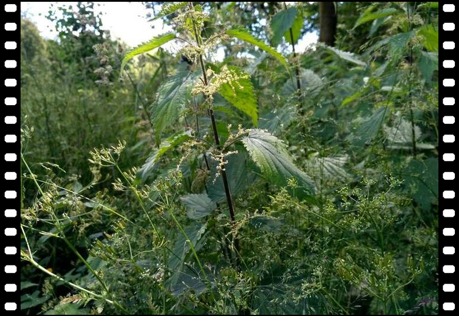
Дальше тропа тянется за забором из хлипкой проволоки вдоль чьего-то аккуратного луга. Мы, как приличные люди, пытаемся идти по тропе, а не по лугу, хотя это становится всё затруднительнее. Особенно когда заросли крапивы становятся выше головы. В конце концов мы решили завязать с крапивной терапией и вылезли на поле (уже и так хватило, что крапива долезла даже в подмышки и через Сергунские джинсы).
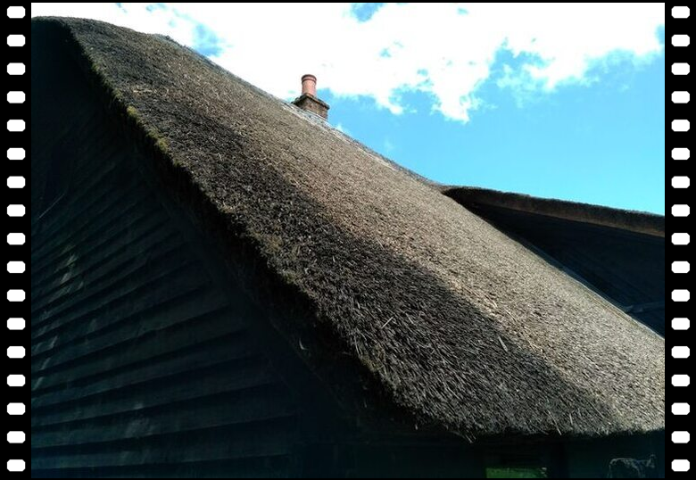
Впрочем, колоть перестало довольно быстро, по крайней мере мы об этом не думали. По пути попадается дом с мохнатой крышей наподобие веника.
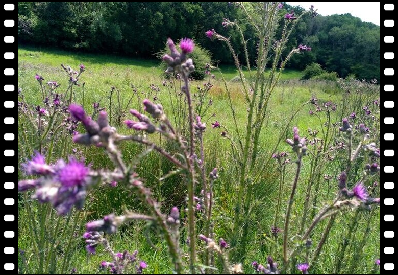
Начинает попадаться всё больше людей — мы приближаемся к первому населённому пункту на нашем пути, городку Сельбурн (Selborne). Снова сбились с пути, но на этот раз обнаружили ошибку всего через пару десятков метров. К этому моменту уже немного хотелось упасть где-нибудь на привал, но сначала мы хотели всё-таки дойти до поселения.
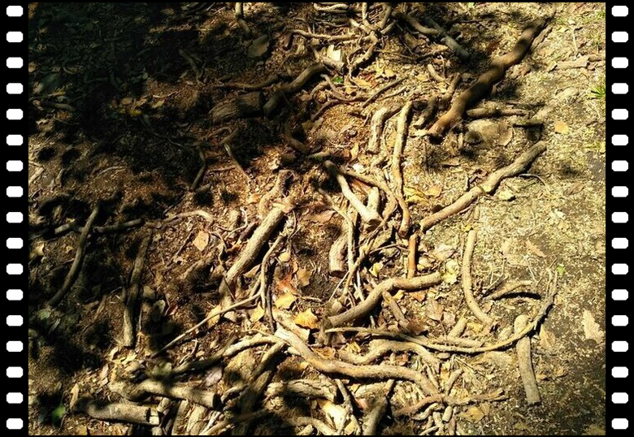
Снова лес, и под ногами какие-то древесные обрубки и труха, на которые падает солнечный свет.
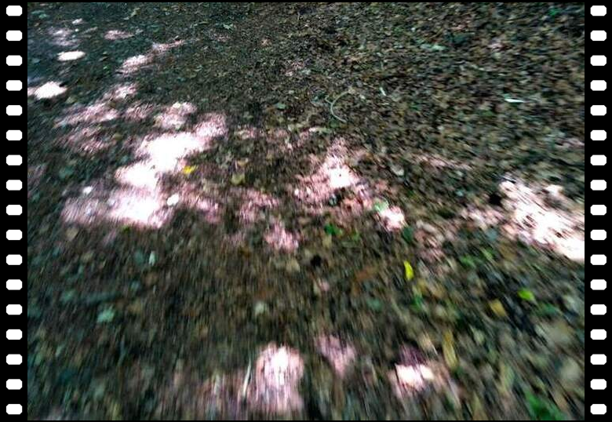
Эта фотка про то, как “земля проносится под ногами”. Она сделалась полу-случайно (в отличие от многих, которые специально, но не сделались), и я решила её не удалять, потому что статичные фотки не передают быстрый темп ходьбы. А так вообще в походе фотки делаются перебежками: щёлкнул — догнал, потому что иначе можно застрять на три часа, и рваный темп доконает всех кроме горе-фотографа.
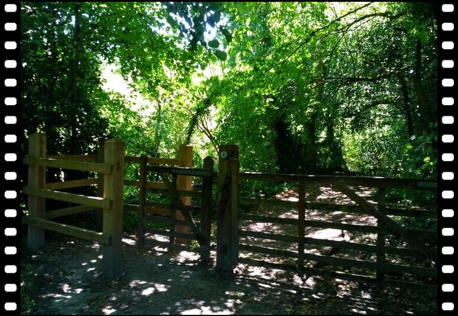
Очередной забор, и наша верная зелёная стрелка в белом кружке. Заборы там эти через каждые пятьсот метров, а то и чаще. А стрелок к этому моменту стало несколько (разных цветов, так что на запутаешься), потому что в этом месте разные пути пересекаются.
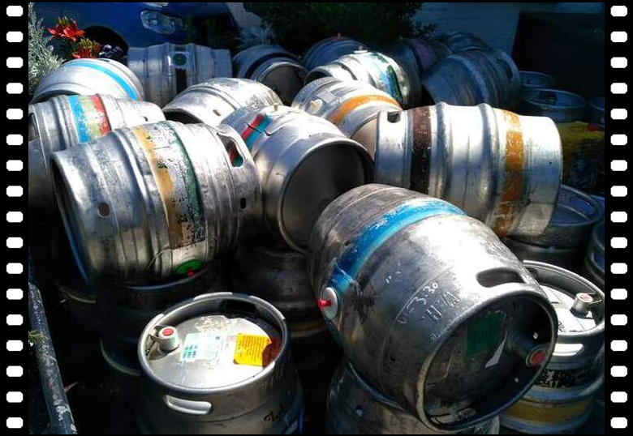
Наконец мы дошли до Сельбурна, и на короткое время снова оказались в цивилизации. Возле какого-то паба внушительное скопление бочек.
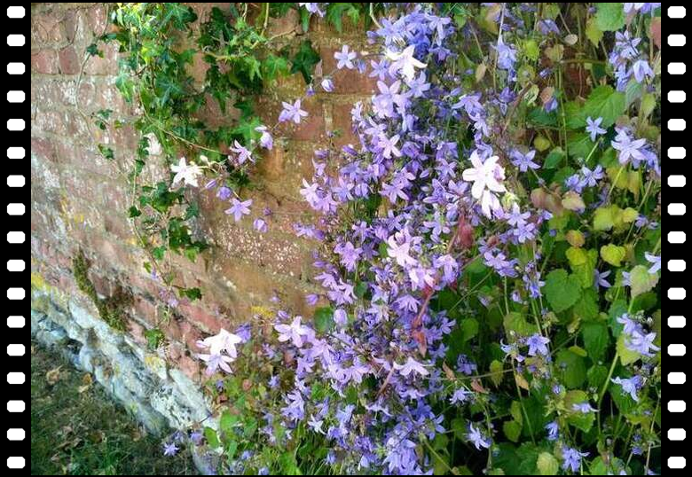
Растущие на кирпичной стене цветы — обычное дело.
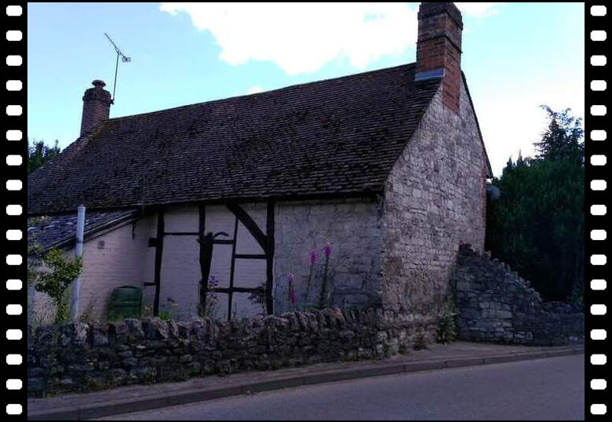
Придорожный дом с характерной каменной кладкой.
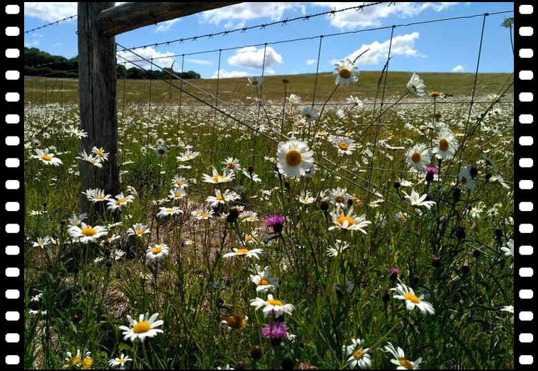
Вскоре мы вышли из Сельбурна, и дорога опять превратилась в тропу. От этого немного возникло чувство, что мы тащимся уже чёрт знает сколько, а удачного места для привала всё никак не попадается. Под удачным местом я понимаю одинокий дуб посреди поля, с приятной тенью и сухим травяным подножием, немного в стороне от основного пути, можно с каким-нибудь ручьём поблизости, но без зарослей крапивы и комаров. Также подойдёт сухой хвойный лес, с вересковой подложкой, желательно над обрывом и с видом на даль. Так вот, как ни странно, такого места не попадалось, а вместо этого мы вышли на край огромного ромашкового луга. На заборе написано, что это специльно охраняемый кусок дикой природы.
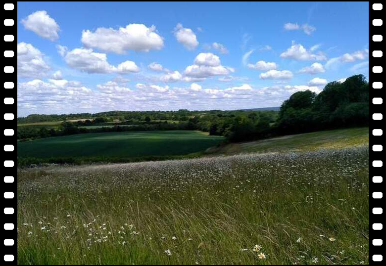
Мы стали взбираться по лугу вверх, к кромке леса. Судя по карте, мы на подступах к холму Noar Hill. По дороге мы обогнали пару людей, высматривавших что-то в придорожных цветах — видимо, ботаники, вышедшие “на дело”. Мы ещё минут двадцать бродили по лесу на вершине холма в поисках места, где бы упасть, а потом СергейАнатольич высмотрел странную лощину, больше всего напоминающую трек для горных велосипедов: какие-то очень ухабистые ухабы в земле, поросшие травой и кустами, с множеством пересекающихся тропинок. Странное, красивое место. Мы бросили поклажу на тряпку на краю ложбины и стали поедать сухой паёк. Пока мы сидели, по тропинкам петлями ходили группы людей, и все они что-то высматривали в траве. Мы малость недоумевали, но потом кто-то спросил нас, не видели ли мы маленькие синие цветы (они сначала произнесли название, но мы не поняли и пришлось объяснять). Видимо, это какие-то местные поиски папараць-кветки.
Мы не видели маленькие синие цветы, и, закончив перекус, отправились дальше.
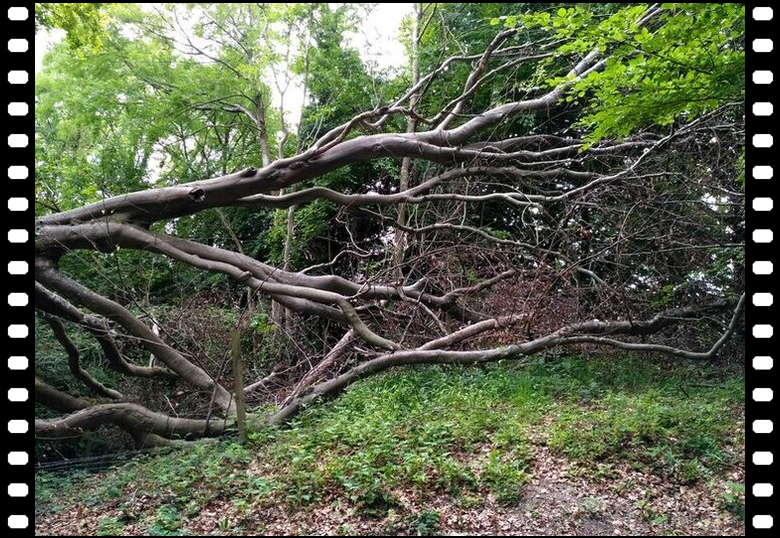
Лес тут слегка напоминает бороду нестриженного защитника свободного программного обеспечения.
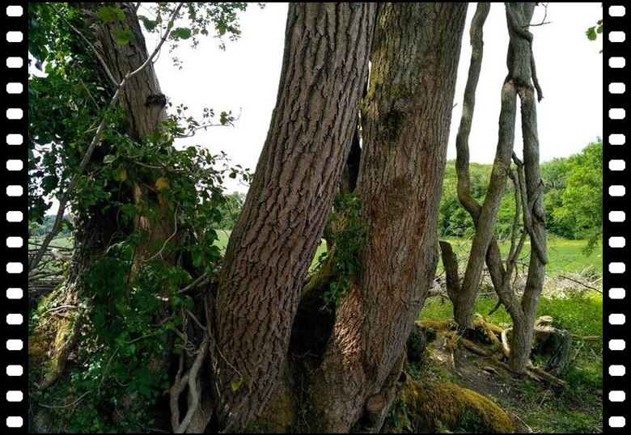
Вот эти толстые коренья, свисающие с дерева — обрубленный высохший плющ. Он толще моей руки.
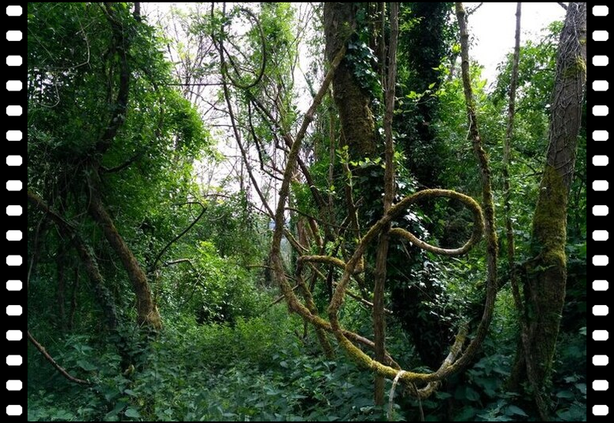
Я сделала одну классную фотку, как СергейАнатольич держится за толстенную сухую лиану, как за канат, но телефон её конечно же съел. А вот этой буквой “е” мог бы вдохновиться любой составитель шрифтов.
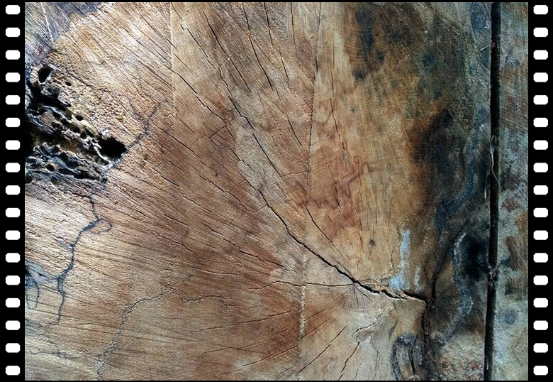
Много попиленных стволов и веток и выкорчеванных пней.
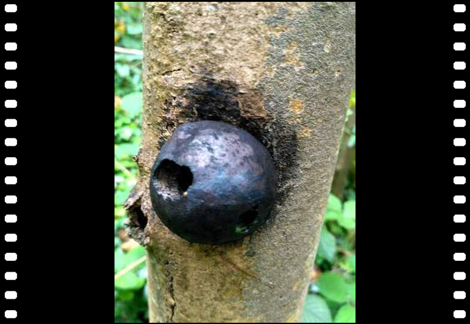
На одном из деревьев — страшноватые иссиня-чёрные наросты.
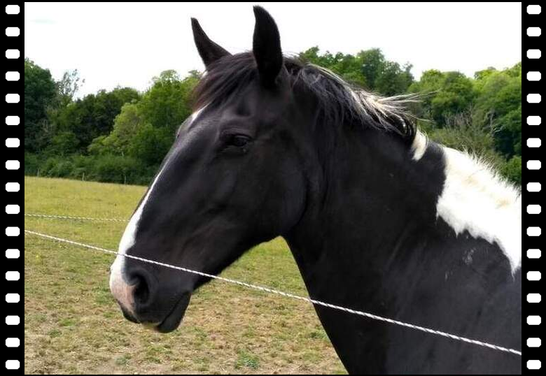
Наконец мы вышли из леса и попали на очередное поле с лошадками. Эти совсем другие по строению чем те, которых мы видели раньше вместе с овцами: у этих всех ярко-выраженная треугольная шея, и морда более гнутая. На фотке (специально для Юли) один из местных чёрно-белых коней. Он долго смотрел на нас, когда мы уходили.
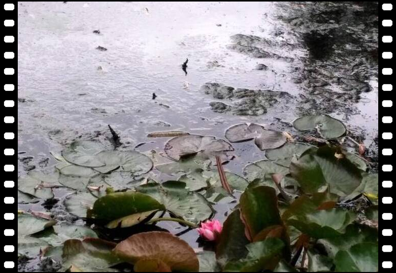
Тропа снова вырулила на дорогу, и в одном месте нам встретился необычный пруд, оброщенный странными растениями. Вроде и болото болотом, а с другой стороны — произведение искусства. В воде произрастает розовая кувшинка.
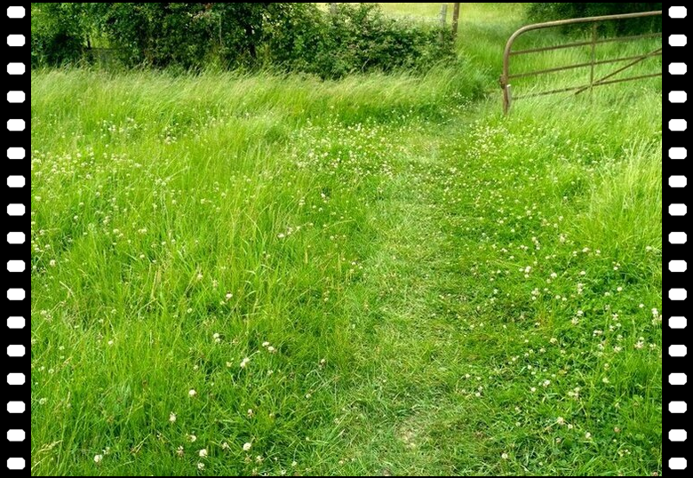
Идём дальше. Клеверные луга, наводящие на мысли о морских свиньях и плотном обеде.
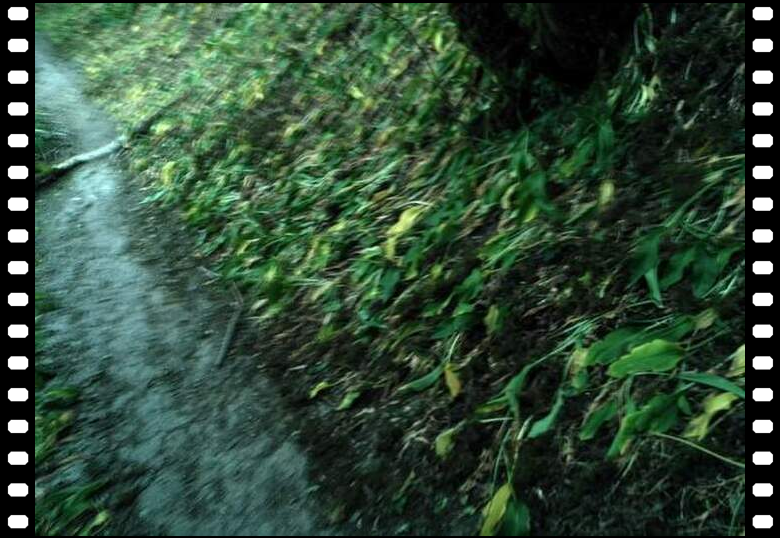
Снова начинается лес. Всю дорогу нас сопровождает стойкий запах квашеных огурцов. На самом деле это дикий чеснок (черемша). Его сезон уже на излёте, и тёмно-зелёные (как у ландышей) листья пожелтели и подкосились. Они покрывают землю сплошным ковром, вызывая чувство осеннего леса.
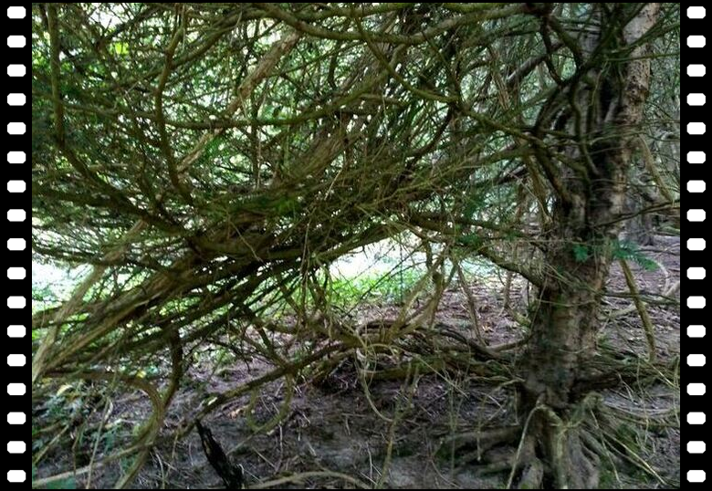
Типичная картина для местного леса Эти деревья растут во все стороны, образуя какое-то гигансткое гнездо.
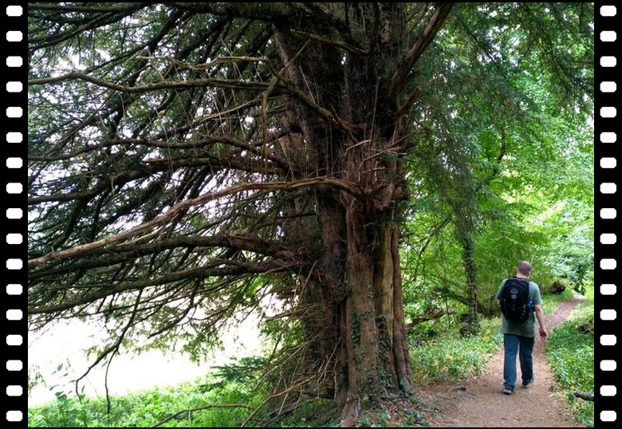
Сергей Анатольич уходит вдаль.
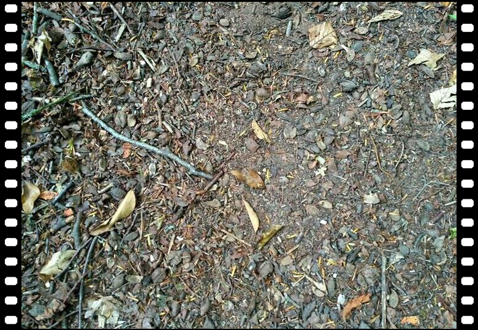
А вот такая в лесу земля: сухая и из сплошных щепок, листьев и мелких камней.
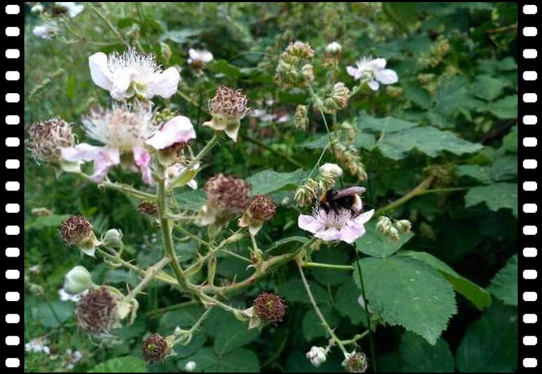
По лесу мы шли довольно долго, и преодолели большую часть пути до следующего населённого пункта — деревни Хокли (Hawkley). Она совсем маленькая, и мы вышли из неё почти сразу, как вошли. Дальше тропа идёт в колее вдоль полей и живых изгородей с кустами шиповника, шмелями и пчёлами.
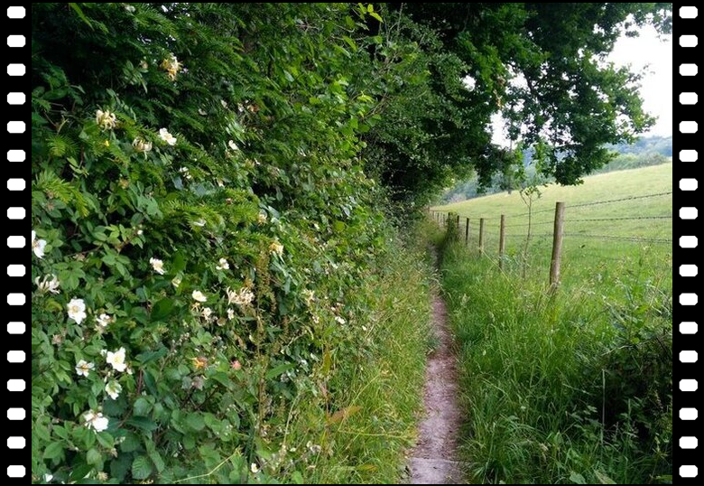
Доносится приятный запах палёных деревяшек — кто-то разжёг костёр. К этому моменту небо совсем затянуло. Дождя мы не боимся, потому что по прогнозу его не обещали.
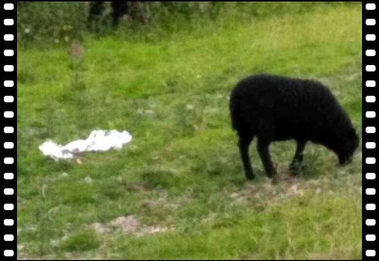
На этом произведении фотографического искусства вы видите сразу двух животных (белая тряпка не в счёт): удаляющийся из кадра чёрный баран и неподвижно сидящий в траве заяц (надеюсь вы его нашли). Моё чувство прекрасного обещает подать в отставку глядя на эту фотку, но выкинуть её я не могу: не зря же заяц позировал.
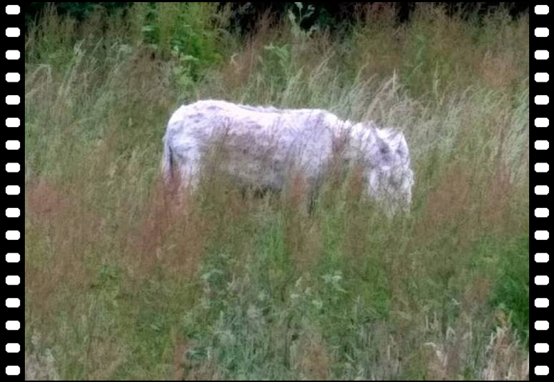
Идём дальше. Серебристая тень махрового осла на холме.
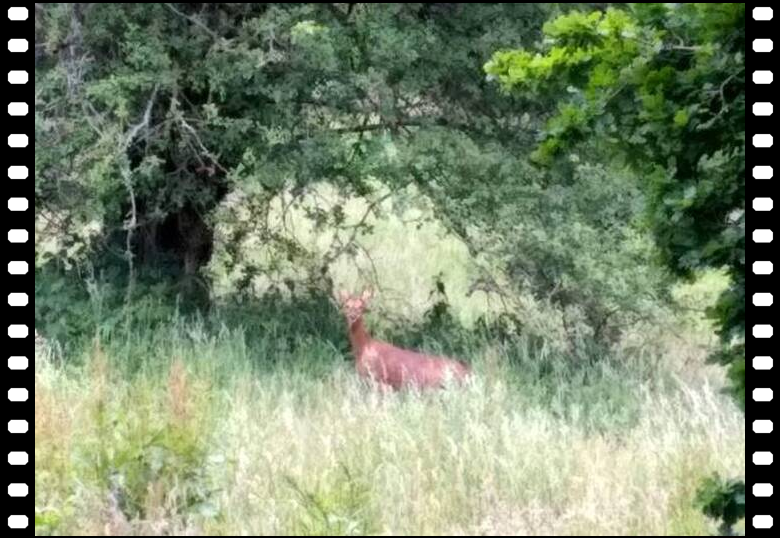
Не успели мы оторвать взгляд от осла, как его приковала гуляющая на свободе дикая косуля. Она, как и заяц, долго стояла неподвижно, развернув на нас свои здоровенные уши. Подождала, пока я её сфоткаю, и рванула по холму так, что только копыта сверкнули.
Идём дальше. Люблю деревяшки!
А здесь прямо какие-то силовые линии и векторные поля.
Между тем, на дороге всё чаще попадаются хвощи. Временами мы переходим через мелкие ручьи, коих тут великое множество.
Люди тут живут менее тесно, чем в городах, и нередко попадаются свидетельства чьего-то шикарного детства. В одном месте так вообще попался деревянный дом, сварганенный на деревьях и досках над речкой (но поскольку хозяин был в доме, фоткать было нехорошо).
Дорога пошла круто в гору, на холм, поросший шиповником. На фотке — взгляд назад, и довольно крутой подъём выглядит совсем полого.
Вся земля вдоль тропы изрыта какими-то существами, а кочки напоминают собой кучи трухи (муравейники что-ли).
Вид с вершины холма на даль, из которой мы пришли.
Сама вершина довольно большая и плоская, и вся покрыта лесом.
Кажется мы попали в очередное искривление пространства-времени. :)
Впрочем, через секунду всё устаканилось и никакого искривления нет. Мы ещё немного набрали высоты, и вот…
…выход к главной цели нашего пути, вершине холма с поэтичным названием Плечо Барана (Shoulder of Mutton Hill). На фотке плохо видно, но за этим высоким деревом — крутой спуск вниз, в деревню Стип (Steep), из которой уже рукой подать до конечного пункта нашего пути — города Петерсфилд (Petersfield). Под деревом добрые люди расположили скамейку, на которую мы радостно преклонили наши зады. Задул холодный ветер, мы натянули кофты поверх взмокших маек и стали поедать вторую половину пайка. Кстати, моя любимая еда — хлебцы с хлебцами. Тут главное, чтобы они были разные, например рисовые с ржаными, и чтобы хотя бы одни были солёные. Хлебцы с хлебом тоже вкусно, по сравнению с хлебцами хлеб выступает в роли колбасы.
Наконец всё было съедено и пора было выправляться в путь. Взмокшие майки холодили спину и зад (так всегда после привалов), тучи сгустились, и оставшиеся километров пять перестали казаться таким уж плёвым расстоянием. Короче, мы нагрузились и набрякли, а погода свернула куда-то в сторону от обещанного прогноза. К счастью, пять минут быстрой ходьбы растрясают любой куль с овсом.
Вид на даль из зарослей папоротника на вершине. После этого мы начинаем стремительно терять высоту.
На фотке видно, что дует сильный ветер, а идём мы быстро, потому что крутой склон.
Моя морда спускается по склону.
В какой-то момент деревья кончились, и за ними открылся лысый склон с небольшой ложбиной, из которой далеко видать в разные стороны. В этой ложбине оказался камень и группа людей — они просто лежали на склоне и смотрели вдаль. Я подумала, что они тоже видели прогноз погоды, потому что тучи к этому моменту приняли уже довольно серьёзный оттенок — если не знать, что не будет дождя, то в жисть не догадаешься.
Вот они, маленькие синие цветы, которые столь тщетно искали те люди четыре часа и десять километров назад! :D
Шутка, конечно. Наверное.
К этому моменту мы уже сошли с проложенного по карте маршрута и резали напрямик (в каком-то не совсем обычном смысле слова “прямик”). В долине видны чьи-то красивые похожие на замок дома. Но на фотке, понятно, всё в кашу.
За какие-то пять минут мы сбросили оставшуюся высоту (на Плече Барана было метров 250) и вышли на какую-то насыпную дорогу. К моему удивлению, пошёл дождь. Впрочем, маленький, тихий и тёплый. Мы достали хилый синий микро-зонт, который обычно служит отпугивателем дождя, балластом и пятном чистого синего цвета в кармане рюкзака.
Идти вдвоём под зонтом, следить за маршрутом и фоткать (да ещё так, чтобы мобила не намокла) — не очеть-то удобно, особенно учитывая что к этому моменту в рядах телефонов убыло, и оставшийся кусок пути мы маршрутизировались и щёлкали с телефона Сергей Анатольча. Но это строение не запечатлеть было нельзя.
Проходим через деревню. Люди с нами здороваются. Люди тут вообще почти всегда приветствуют или улыбаются, а во время коронавируса образовался дополнительный танцевальный обряд с поклонами и выжиданиями. Сергей Анатольич обнаружил возле одного из домов водопад. Возле водопада закреплена скульптура. Если бы Сергей Анатольич не обратил внимание, я бы так и не поняла, что эти странные рога специально подогнаны так, чтобы отражение а столбе было в точности как слегка повёрнутая кисть руки. Вот так вот, думаешь, что всё бессмысленно, а на самом деле есть смысл.
Кстати, вход в этот дом выглядит вот так. Красиво жить не запретишь!
Ешё какое-то время мы петляли по деревне вдоль полей с овцами (петлять под зонтом по узкой тропе довольно неудобно), а потом вышли к трассе, за которой начинается город. Это взгляд на северо-восток, в сторону Лондона. Видно, что там облаков поменьше, и прогноз вполне возможно что оправдался.
Близость города чувствуется совсем слабо. Где-то здесь мы прощаемся с зелёной стрелкой в белом кружке — хоть мы и сошли с тропы Hangers Way когда принялись резать по прямой с вершины холма, но потом мы набрели на неё опять. А теперь она уходит дальше к югу и взбирается уже на другие холмы. Ну а мы — на станцию и домой.
Небо над станцией проясняется. Это вид на юг, в сторону, противоположную от Лондона. Туда, куда идёт дальше Hangers Way.
Наши радостные морды на пути назад. :)
comments powered by Disqus